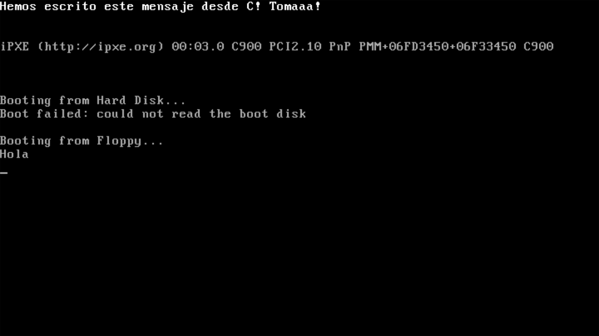

Capítulo 8: Here, There and Back Again
Hasta ahora, solo hemos saltado hacia adelante en nuestro kernel. De la BIOS a la stage1, de la stage1 a la stage2, de los 16 bits a los 32 bits... En este capítulo, aprenderemos a volver atrás siempre que sea necesario.
No solo me refiero a las secciones de nuestro bootloader. También aprenderemos a saltar de Assembly a C. Si no sabes escribir en C, no te preocupes mucho (por ahora), porque escribiremos muy pocas lineas, solo para aprender a movernos entre los dos lenguajes.
Tabla de contenidos
Volver al modo real
Ya sabes que para usar los BIOS interrupts tenemos que volver al modo real del procesador. Este proceso se considera costoso, y es recomendable evitarlo cuando sea posible. Sin embargo, también es necesario para algunas funciones básicas del bootloader.
La teoría: ¿por qué no nos quedamos en el modo real?
Respuesta corta: porque estamos usando GCC, y además, queremos usar más de 64 KB de RAM.
Respuesta larga: para empezar, tienes que entender la diferencia entre el código de 16 bits y el de 32.
NASM se encarga de traducir nuestro código Assembly a código máquina. Las secciones marcadas con la directiva [bits 16] se traducen a código máquina de 16 bits, y las marcadas con la directiva [bits 32]... te puedes imaginar.
El procesador tiene que saber cuánto ocupa cada instrucción para poder saltar a la siguiente al terminar cada instrucción. Para entendernos, ve nuestro código de 16 bits aproximadamente así:
| 0x00 | 0x01 | 0x02 | 0x03 | 0x04 | 0x05 | 0x06 | 0x07 | 0x08 | 0x09 | 0x0A | 0x0B | 0x0C | 0x0D | 0x0E | 0x0F |
|---|---|---|---|---|---|---|---|---|---|---|---|---|---|---|---|
| instrucción 1 | instrucción 2 | instrucción 3 | instrucción 4 | ||||||||||||
Y el código de 32 bits, así:
| 0x00 | 0x01 | 0x02 | 0x03 | 0x04 | 0x05 | 0x06 | 0x07 | 0x08 | 0x09 | 0x0A | 0x0B | 0x0C | 0x0D | 0x0E | 0x0F |
|---|---|---|---|---|---|---|---|---|---|---|---|---|---|---|---|
| instrucción 1 | instrucción 2 | ||||||||||||||
Si saltamos a una sección que contiene código de 32 bits sin cambiar de segmento en nuestra GDT (es decir, sin avisarle del cambio de tamaño), intentará ejecutar como instrucciones cosas que no lo son. Leerá instrucciones partidas a la mitad y se comportará de formas inesperadas. El cambio de segmento avisa al procesador para evitar esto.
¿Y para eso hace falta entrar en modo protegido? Sí. Para cargar la GDT y poder definir y usar segmentos de 32 bits, Intel te obliga a cargar el modo protegido antes (linea A20, cambiar la PE flag, etc.). Si intentamos ejecutar código de 32 bits antes del cambio, provocaremos un General Protection Fault o un Segmentation fault dependiendo del caso. Por eso hemos hecho el salto en el capítulo anterior.
¿Y para qué necesitamos el código de 32 bits? Por varias razones:
- Porque GCC, y la mayoría de los compiladores de C que siguen vivos, no compilan código máquina de 16 bits. Si escribimos en C, el modo real no es una opción sostenible.
- Ya lo hemos mencionado, pero para usar más de 64 KB de RAM, necesitamos acceder a direcciones por encima de los 16 bits. Desde los 32 bits, podemos acceder de forma segura a los primeros 4 GB de RAM.
La práctica: ya sabemos salir, ¿cómo volvemos a entrar en el modo real?
En el capítulo anterior, nuestro código termina llamando a la función pmode_print y deteniendo el sistema. Como siempre, vamos a empezar a escribir desde las lineas anteriores a jmp halt.
Recordemos nuestra GDT: estamos en el segmento 0x08 (código de 32 bits). Queremos ir al segmento 0x18 (código de 32 bits). De paso, también queremos saltar a otra sección del código para hacer más claro el salto. Eso es un far jump, y lo ejecutaremos así:
jmp dword 0x18:pmode16
; El nombre 'pmode16' es arbitrario. Podemos llamar a la siguiente sección como queramos.Ahora que volvemos a los 16 bits, podemos desactivar la PE flag sin causar ningún error. Para ello, en la sección a la que hemos saltado, desactivaremos el último bit del registro cr0 tal que así:
pmode16:
[bits 16] ; Emitir código de 16 bits
mov eax, cr0 ; Copiar 'cr0' a 'eax'
and al, ~1 ; Desactivar el último bit de 'eax'
mov cr0, eax ; Copiar 'eax' a 'cr0'Con otro far jump podemos entrar otra vez al modo real. Pero este salto lo haremos al segmento nulo de nuestra GDT (el segmento 0x00). Esta es la forma de desactivar temporalmente el uso de la GDT.
jmp dword 0x00:rmode
; No te lo vas a creer, pero el nombre 'rmode' es arbitrario. Puedes poner el que quieras.Y ya hemos hecho el salto al modo real. Por último, para poder usar el stack y algunas instrucciones, nos queda asegurarnos de que todos los segmentos de datos también se mueven al 0x00. Lo hemos hecho ya varias veces y es siempre así:
rmode:
mov ax, 0
mov ds, ax
mov ss, axSi quieres asegurarte de que todo funciona correctamente, puedes usar la función rmode_print de nuevo para poner un mensaje en pantalla. Así, por ejemplo:
mov si, msg_ejemplo
call rmode_print
; ... y donde declaremos nuestras variables ...
msg_ejemplo:
db "Hemos vuelto al modo real!", 0x0D, 0x0A, 0Recordatorio: cómo volver al modo protegido
Es recomendable limitar al mínimo posible nuestro uso del modo real del procesador. Por eso, una vez terminemos de ejecutar el BIOS interrupt que necesitemos, tendremos que volver al modo protegido.
Se trata de un proceso trivial porque los pasos más difíciles ya están hechos. Solo tienes que activar la PE flag, saltar al segmento de código de 32 bits, anotar la directiva [bits 32] y preparar los segmentos de datos:
; Activar la PE flag
mov eax, cr0
or al, 1
mov cr0, eax
; Saltar al segmento de código de 32 bits
jmp dword 0x08:pmode_again
pmode_again:
[bits 32]
; Reestablecer segmentos de datos
mov ax, 0x10
mov ds, ax
mov ss, ax
; ... nuestro código
Saltar a código escrito en C
Antes de empezar el salto a C, conviene borrar de nuestra stage2 todo el código que hemos escrito para volver al modo real y, desde ahí, volver de nuevo al modo protegido. Para ello, seguiremos los siguientes pasos:
- Eliminar las secciones pmode16, rmode y pmode_again.
- Eliminar la instrucción con la que comenzamos la vuelta al modo real (jmp dword 0x18:pmode16).
- Eliminar la variable msg_ejemplo.
Hecho esto, vamos a ejecutar el salto a C. Para empezar, vamos a hacer un archivo con una función mínima escrita en C, y vamos a saltar a ella desde Assembly.
Escribir un archivo en C
En la misma carpeta que entry.asm, vamos a crear el archivo main.c. La primera función que declararemos en él será quit(), que detendrá el sistema... o, más bien, meterá el código en un bucle for del que no podrá salir.
void quit() {
for(;;);
}La siguiente función se llamará putc() y nos servirá para poner una letra en la pantalla. El método es el mismo que hemos usado en nuestra función rmode_print en Assembly.
Para empezar, en la parte superior de nuestro archivo, definiremos un puntero hacia la dirección del buffer VGA:
char* VGA_BUFFER = (char*) 0xB8000;Y en el sitio que queramos, colocaremos nuestra función, que recibirá tres datos:
- El caracter que queremos escribir.
- El código de color que queremos usar.
- La posición del carácter (0 para la esquina superior izquierda, 1 para el siguiente, 2 para el siguiente...).
void putc(char character, char color, int pos) {
VGA_BUFFER[pos] = character;
VGA_BUFFER[pos+1] = color;
}La siguiente función, que llamaremos write() llamará a putc() repetidas veces para poner cadenas de texto enteras. Para ello, utilizará un bucle while:
void write(char* message, char color, int pos) {
while(*message != 0) {
putc(*message, color, pos);
message++;
pos += 2;
}
}Esta función irá poniendo cada caracter de la string que le demos, y avanzará 2 bytes para escribir el siguiente, y el siguiente... hasta que encuentre el caracter nulo (representado en ASCII mediante el número 0). Al encontrarlo, terminará de ejecutarse.
Un dato curioso de C es que si, en vez de una condición, solo escribes el nombre de una variable, eso se interpretará como una condición que niega que el valor de la variable sea 0. En resumen, escribir while(*message != 0) es lo mismo que escribir while(*message).
Por último, crearemos nuestro punto de entrada: la función cstart(). En ella, escribiremos un mensaje en la esquina superior de la pantalla y detendremos el sistema:
void cstart() {
write("Hemos escrito este mensaje desde C! Tomaaa!", 0x0F, 0);
quit();
}Llamar a nuestra función cstart desde assembly
Vamos a importar esta función desde nuestro archivo entry.asm. Para ello, vamos a irnos al principio del archivo, y en la parte donde tenemos importadas las variables __bss_start y __end, añadiremos una linea para importar nuestra función:
; Funciones importadas de main.c
extern cstartAhora que la hemos importado, podremos llamarla directamente desde nuestro código, como si fuera un símbolo en assembly. Es decir, podemos llamar a cstart con una instrucción call al final de nuestra sección pmode32 (justo antes de nuestro salto a halt):
pmode32:
; ...
call cstartLa función cstart está diseñada para no volver nunca después de haberla llamado, pero si cometemos algún error y vuelve, deberíamos tener aquí código para detener el sistema. Por eso, a la instrucción call cstart debería seguirla una desactivación de los interrupts y un salto a halt:
pmode32:
; ...
call cstart
; Detener el sistema si el código llega a volver
cli
jmp haltCompilar main.c y enlazarlo junto al resto del código
En nuestro script build.sh, usamos las siguientes lineas de código para compilar y enlazar nuestra stage2:
nasm -f elf -o build/obj/entry.obj src/stage2/entry.asm
${GCC} -T src/stage2/linker.ld -nostdlib -o build/bin/stage2.bin build/obj/entry.obj -lgcc- La primera compila entry.asm y lo convierte en un objeto binario llamado entry.obj.
- La segunda vincula nuestros objetos binarios (por ahora, solo entry.obj) para crear un ejecutable llamado stage2.bin. Además, tiene opciones para vincularlo obedeciendo a linker.ld (-T src/stage2/linker.ld), no usar la C Standard Library (-nostdlib) y sí usar libgcc (-lgcc).
Ahora tenemos un nuevo archivo que añadir a nuestro ejecutable: main.c. Es decir, tenemos que compilarlo para crear main.obj y vincular ese objeto binario a nuestro ejecutable.
Traducido a bash, eso significaría invocar a GCC para la arquitectura i686-elf, definido en nuestra variable ${GCC}, y con él, compilar (-c) para un entorno sin sistema operativo (-ffreestanding), sin llamadas a la C Standard Library (-nostdlib).
El archivo de código será src/stage2/main.c y el archivo de destino (el objeto binario) será build/obj/main.obj:
${GCC} -ffreestanding -nostdlib -c -o build/obj/main.obj src/stage2/main.cTras esto, tendremos 2 objetos binarios (entry.obj y main.obj). En el comando que usamos para vincular los objetos y crear el ejecutable, simplemente tendremos que añadir main.obj a la lista de objetos binarios. Aquí tienes el comando actual dividido por lineas para entenderlo bien:
${GCC} \
-T src/stage2/linker.ld \ # Vincular usando 'linker.ld'
-nostdlib \ # Sin la C standard library
-o build/bin/stage2.bin \ # Hacia el archivo 'stage2.bin'
build/obj/entry.obj \ # Lista de objetos binarios que vincular
-lgcc # Usando 'libgcc'Lo único que hay que hacer es añadir el nuevo objeto main.obj a la lista de objetos binarios que vincular:
${GCC} \
-T src/stage2/linker.ld \ # Vincular usando 'linker.ld'
-nostdlib \ # Sin la C standard library
-o build/bin/stage2.bin \ # Hacia el archivo 'stage2.bin'
build/obj/entry.obj \ # Lista de objetos binarios que vincular
build/obj/main.obj \
-lgcc # Usando 'libgcc'Aquí lo tienes en una linea:
${GCC} -T src/stage2/linker.ld -nostdlib -o build/bin/stage2.bin build/obj/entry.obj build/obj/main.obj -lgccEn el futuro cercano, nos mudaremos a una estructura de proyecto más sostenible a largo plazo, ya que nuestro script se está volviendo un poco enrevesado. Por ahora, como solo tenemos 2 archivos de código (entry.asm y main.c) nos sigue sirviendo.
Ejecución y resultados
Como siempre, puedes emular el sistema operativo (siempre que tengas instalado qemu) ejecutando el script build.sh. Deberías ver en la primera linea de la pantalla el texto que hemos escrito en nuestra función cstart().

Como curiosidad, ha sobreescrito lo que escribimos en este mismo sitio en el capítulo anterior (el texto en azul que decía Modo protegido). Un mensaje de capítulos anteriores que sí podemos ver es ese Hola, que ponemos en pantalla al iniciar la stage2. Estos mensajes sirven únicamente para depurar el programa y serán eliminados en capítulos posteriores.
Resumen
Este capítulo ha sido algo más corto y menos denso, y sienta el precedente para desarrollar partes algo más complejas de nuestro bootloader. Hemos aprendido a volver al modo real y de ahí otra vez al modo protegido. También hemos saltado por primera vez a código escrito en C.
A partir de aquí, podremos aprovechar el potencial de C para cargar, por fin, el primer programa de nuestro sistema operativo: el kernel. Para ello, tendremos que volver a repasar conceptos fundamentales de FAT12, instalar el kernel en nuestro sistema operativo, y saltar a su código.
Ejemplo descargable
En el apartado sobre volver al modo real hemos escrito algunos fragmentos de código que no estarán presentes en nuestro sistema final. Por esa razón, en este capítulo presentamos 2 ejemplos descargables:
- capitulo-8-cambios-de-modo.tar.gz: nuestro código para entrar al modo protegido, volver al modo real y volver de nuevo al protegido.
- capitulo-8-salto-a-c.tar.gz: nuestro código para saltar a código C.